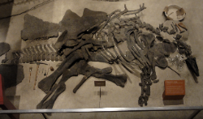
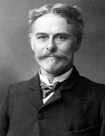

Stegosaurus
Stegosaurus, is one of many dinosaurs collected and described for the first time in the bone wars, it was originally named by Marsh in 1877, from remains recovered in northern Morrison, in the state of Colorado, United States. These first bones became the holotype of Stegosaurus armatus. Marsh initially believed that the remains belonged to a turtle-like aquatic animal, and the basis for his scientific name, "roof lizard", came from his initial belief that the plates were on the animal's back, overlapping like roof tiles. on a roof. Rich Stegosaurus materials were discovered in the following years, and Marsh published several articles on the genus from 1877 to 1897. In 1878, American paleontologist Edward Drinker Cope named Hypsirhophus discurus, as belonging to the genus Stegosaurus based on fragmentary fossil specimens from the Cope's Quarry 3 near the site known as "Cope's Nipple" in Garden Park, Colorado. Many later researchers considered Hypsirhophus to be a synonym for Stegosaurus, although Galton (in 2010) suggested that they were distinct genera based on differences between their vertebrae.
Marsh named a second species, Stegosaurus ungulatus, in 1879, and eventually made a more detailed description of all Stegosaurus fossils collected until the following year. In 1881, he named a third species, Stegosaurus "affinis", based solely on the hip bone. This species has been widely accepted as having been inadequately described and is therefore a nomen nudum (a species that does not have a formal description). The specimen was later lost. Marsh continued to collect and examine new species of Stegosaurus, and in 1887 he named three new species: S. stenops, S. duplex, and S. sulcatus. Although not yet completely prepared, the nearly complete and articulated species of Stegosaurus stenops allowed Marsh to complete the first attempt at reconstructing a Stegosaurus skeleton. This first reconstruction, of S. ungulatus with missing parts filled with S. stenops fossils, was published by Marsh in 1891. In 1893, English naturalist and geologist Richard Lydekker mistakenly republished Marsh's drawing with the indication of a Hypsirhophus.
He was one of the founders of the neo-Lamarquist school. Soon after its discovery, Marsh considered that Stegosaurus could have been bipedal, due to its short forelimbs. He had changed his mind, however, in 1891, after considering the size and weight of the animal. Although Stegosaurus is undoubtedly today considered quadrupedal, some discussion took place as to whether it could have stood upright on its hind legs, using its tail to form a tripod with its hind limbs, and seeking out higher foliage. This was proposed by Bakker and refuted by Japanese paleontologist Kenneth Carpenter. A study by German paleontologist Heinrich Mallison (2010) supported the idea of an upright stance in Kentrosaurus, although it did not confirm the tail's ability to act as a tripod.
Edward Drinker Cope was an American paleontologist and comparative anatomist, as well as a herpetologist and ichthyologist. He was one of the founders of the neo-Lamarquist school. Born into a wealthy Quaker family, Cope distinguishes himself as a child prodigy interested in science; published his first scientific article at 19 years of age.
 Also watch for discoveries such as: Stegosaurus — sometimes referred to as Stegosaurus (Portuguese pronunciation: [iʃtɛɡɔˈsawru]) or Stegosaurus